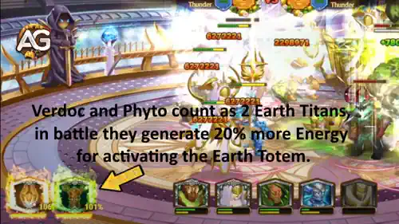

Verdoc e Phyto não são apenas mais um par de Titãs eles representam uma nova era de sinergia da Terra em Hero Wars: Dominion Era. Seu vínculo único aprimora o controle de multidão e cria um impulso de batalha imparável.
Essa dupla fortalece sua equipe ao simplificar a ativação do Totem da Terra e amplificar os efeitos de atordoamentos de aliados como Nova e Moloch, tornando-os indispensáveis para qualquer formação de Titãs da Terra.
Guia Verdoc e Phyto - Hero Wars: Dominion Era, um jogo desenvolvido pela Nexters.
Quem são Verdoc e Phyto?
Verdoc e Phyto são um par único de Titãs da Terra que lutam lado a lado como uma só entidade. Phyto, uma criatura semelhante a uma planta, obtém força dos poderes de invocador de Verdoc para controlar vinhas e raízes que imobilizam inimigos e protegem aliados.
Função: Invocador
Elemento: Terra
Posição: Linha do Meio
Juntos, eles introduzem uma nova mecânica de combate que recompensa o jogo tático e o bom timing. Sua sinergia com Titãs que usam atordoamentos, como Nova e Moloch, cria cadeias devastadoras de controle de multidão que podem neutralizar equipes inimigas.
Sua habilidade de facilitar a ativação do Totem da Terra abre novas estratégias para equipes desse elemento, fortalecendo o domínio da Terra tanto no PvP quanto nas Batalhas de Guilda.
Vantagens e Desvantagens de Verdoc e Phyto - Hero Wars: Web & Facebook
✅ Vantagens
Papel de Invocador Forte: Invoca Phyto para controlar inimigos e apoiar aliados.
Excelente Controle de Multidão: Phyto atordoa e aumenta a duração dos atordoamentos recebidos pelos inimigos.
Sinergia com Titãs da Terra: Melhora a ativação e a geração de energia do Totem da Terra.
Durabilidade: Phyto compartilha a vida de Verdoc, tornando a dupla de Titãs difícil de ser derrotada rapidamente.
Fusão de Totens Flexível: Funciona bem tanto com Totens Elementais quanto Primordiais em estratégias de PvP.
Vantagem Estratégica: Pode virar o rumo da batalha quando usada com bom timing em conjunto com Totens e invocações.
❌ Desvantagens
Dependente de Totens e da Equipe Aliada: Precisa de Titãs da Terra ou uma equipe focada em atordoamentos para alcançar seu potencial máximo.
Dano Indireto: Phyto não causa dano massivo diretamente; depende de sinergia e posicionamento.
Mecânicas Complexas: Jogadores iniciantes podem ter dificuldade em entender a Fusão de Totens e o tempo das habilidades.
Vulnerável a Interrupções: Se Verdoc for atordoado ou morto antes da ativação dos Totens, o impacto da dupla é reduzido.
Explosão Ofensiva Limitada: Mais forte em papéis de suporte e controle do que em dano bruto.
Guia de Habilidades de Verdoc e Phyto - Hero Wars: Dominion Era
Aprenda como as habilidades de Verdoc e Phyto trabalham juntas para invocar Phyto, aprimorar atordoamentos e fortalecer a ativação do Totem da Terra, transformando as batalhas de PvP.
Fitogênese (Habilidade Suprema)
Quando Verdoc usa sua habilidade suprema, ele invoca Phyto para o campo de batalha. Ao chegar, Phyto libera uma onda de choque que causa
(20% ATQ) de dano e atordoa inimigos próximos por 1 segundo.
Isso a torna uma habilidade tanto ofensiva quanto de controle mesmo que o dano base não seja muito alto, o atordoamento garantido pode interromper Titãs inimigos e atrapalhar a rotação de habilidades deles.
Phyto também emite uma aura poderosa que aumenta a duração dos efeitos de atordoamento recebidos pelos inimigos ao seu redor em 50%.
Isso significa que aliados como Nova ou Moloch, que dependem de atordoamentos, tornam-se significativamente mais fortes quando lutam ao lado de Verdoc e Phyto.
A Vida de Phyto equivale a 10% da Vida Máxima de Verdoc.
Ele não pode ser danificado diretamente, mas sempre que Verdoc perde Vida, Phyto perde a mesma quantidade conectando seus destinos e adicionando uma camada estratégica à sua defesa no PvP.
Verdoc e Phyto compartilham um Vínculo Espiritual que os conecta profundamente ao elemento Terra.
Nas batalhas, eles contam como 2 Titãs da Terra para fins de ativação de totem.
Isso significa que sua equipe pode ativar o Totem da Terra muito mais rapidamente do que o normal uma enorme vantagem em lutas PvP, onde o tempo de ativação pode definir a vitória.
Graças a essa conexão, eles também geram (+20% de Energia) adicional para a ativação do Totem da Terra durante o combate.
Esse efeito não causa dano direto, mas tem um papel estratégico importante você obtém acesso mais frequente ao seu totem elemental, permitindo superar oponentes que dependem de uma geração de energia mais lenta.

Vínculo Espiritual: Terra (Habilidade Passiva) - Titãs Verdoc e Phyto - Hero Wars Dominion Era.
Prioridade de Evolução de Artefatos de Verdoc e Phyto - Hero Wars: Dominion Era
Descubra a melhor ordem de evolução de artefatos para Verdoc e Phyto em Hero Wars: Dominion Era. Saiba quais artefatos aumentam mais o poder de invocação e controle deles.
Artefato de Arma: Raiz de Andvari
Atributo Obtido: +479.475 Dano Elemental
Prioridade de Evolução:Muito Alta – Este artefato aumenta diretamente o dano da onda de impacto da habilidade Fitogênese ((20% ATQ)), tornando a habilidade suprema de Verdoc e Phyto muito mais perigosa em batalhas de PvP. Como o controle deles depende de causar dano suficiente para manter os inimigos sob pressão, este artefato deve sempre ser o primeiro a ser maximizado.
Artefato Coroa da Terra
Atributo Obtido: +97.482 Armadura Elemental
Prioridade de Evolução:Alta – Aumenta a Armadura Elemental, reduzindo o dano recebido de Titãs inimigos. Como a Vida de Verdoc está ligada à sobrevivência de Phyto, melhorar a defesa deles aumenta significativamente a durabilidade em combates de PvP. É uma excelente segunda prioridade, logo após a arma.
Artefato Selo da Natureza
Atributo Obtido: +3.995.583 Vida, +299.673 Ataque
Prioridade de Evolução:Média – Este artefato fornece um bom aumento geral de atributos, mas não impacta diretamente as habilidades principais da dupla. O aumento de Vida ajuda na sobrevivência de Phyto, já que ela escala com o HP de Verdoc, porém é menos importante que os bônus ofensivos e defensivos dos outros artefatos. Atualize este por último, depois de concluir os dois principais.
Totem do Espírito da Terra de Verdoc e Phyto - Hero Wars: Dominion Era
O Totem do Espírito da Terra é o principal totem elemental de Verdoc e Phyto em Hero Wars: Dominion Era. Ele combina perfeitamente com a sinergia deles e aumenta a eficácia das habilidades de invocação e controle durante as batalhas.
Totem Principal: Totem do Espírito da Terra
O Totem do Espírito da Terra aumenta o poder geral dos Titãs da Terra e introduz uma poderosa habilidade de batalha: Cântico das Montanhas Ancestrais.
Quando sua equipe possui pelo menos 3 Titãs da Terra no campo de batalha, o totem é ativado para criar uma grande barreira de cristal que protege todos os aliados contra o dano recebido.
A barreira absorve até +7.659.015 de dano e reflete o dobro do dano absorvido de volta aos atacantes. Isso cria uma sinergia perfeita com as mecânicas de controle e sustentação de Verdoc e Phyto. Enquanto Phyto prolonga os atordoamentos e Verdoc vincula sua Vida à de Phyto, a barreira do totem ajuda ambos a sobreviver por mais tempo permitindo que suas auras e combos de controle dominem as batalhas de PvP.
Além disso, o Totem do Espírito da Terra concede atributos permanentes a todos os Titãs da Terra, fornecendo +3.995.583 Vida, o que fortalece a resistência de Verdoc e, consequentemente, a de Phyto, já que suas Vidas estão interligadas.
Prioridade em Batalha:Muito Alta – O Totem da Terra é essencial para Verdoc e Phyto. Ele aumenta a durabilidade, reflete grandes quantidades de dano e complementa as habilidades de controle e proteção da dupla. É um totem indispensável em qualquer formação de Titãs da Terra.
Melhores Fusões Elementais de Totem para Verdoc e Phyto
Verdoc e Phyto se beneficiam muito de Fusões de Totem que aumentam controle, sobrevivência e dano em área. Como eles se concentram em invocar e apoiar Titãs da Terra, as fusões que protegem aliados, refletem dano ou desestabilizam inimigos funcionam melhor em combates PvP.
1º – Último Clarão
Esta fusão concede à equipe de Verdoc e Phyto uma segunda chance de vida. Quando um Titã aliado está prestes a morrer, ele se torna invulnerável e ganha grande velocidade e poder de ataque por alguns segundos. É perfeita para momentos decisivos de PvP, quando o inimigo pensa que venceu apenas para enfrentar uma fúria súbita da Terra!
2º – Murmúrio das Rochas
Cria uma barreira rochosa que protege todos os aliados e reflete o dobro do dano absorvido. Essa fusão combina perfeitamente com as habilidades de barreira de Verdoc e Phyto, fortalecendo a defesa e punindo os atacantes. Ideal para formações defensivas em PvP.
3º – Era do Gelo
Congela os Titãs inimigos quando o totem base deles é ativado, interrompendo-os brevemente e aplicando Fragilidade para aumentar o dano recebido. Funciona bem quando o objetivo é controlar os inimigos enquanto as invocações de Verdoc e Phyto causam dano com segurança.
4º – Sussurro das Profundezas
Restaura a vida dos aliados e causa dano aos inimigos próximos. É uma opção equilibrada, mas menos impactante que Último Clarão ou Murmúrio das Rochas em PvP de alto nível, onde velocidade e controle são mais importantes que cura gradual.
5º – Dança das Chamas
Embora cause forte dano em área (AoE), não tem sinergia com a estratégia de controle e reflexão de dano de Verdoc e Phyto. É mais adequada para formações ofensivas de Titãs de Fogo.
Melhores Fusões Primordiais de Totem para Verdoc e Phyto
Os Totens de Fusão Primordial se concentram em cura, escudos e regeneração de energia todos capazes de amplificar a sustentação e o estilo de suporte de Verdoc e Phyto. Esses Titãs prosperam quando a equipe permanece viva tempo suficiente para que suas plantas e raízes invocadas dominem o campo de batalha.
1º – Ciclo Triplo
Esta é a fusão de suporte definitiva para Verdoc e Phyto. Ela concede cura, escudos ou bônus de ataque dependendo da situação cada efeito complementa perfeitamente o estilo de jogo durável e reativo da dupla. Ajuda suas raízes invocadas e aliados a permanecerem vivos sob pressão constante.
2º – Égide do Eco
Sempre que um escudo é quebrado, outro aparece instantaneamente. Isso funciona em perfeita sinergia com a geração de barreiras de Verdoc e Phyto, garantindo proteção contínua e combinando bem com o Murmúrio das Rochas ou com seus escudos de raiz.
3º – Pulso dos Antigos
Cura os aliados sempre que eles usam uma habilidade. Como Verdoc e Phyto ativam constantemente suas habilidades, esse efeito passivo de cura mantém a dupla e sua equipe sustentadas durante batalhas longas.
4º – Zelo Primordial
Concede uma chance de restaurar energia após o uso de habilidades. É útil, mas menos confiável, já que Verdoc e Phyto já geram energia de forma eficiente por meio de suas próprias mecânicas.
5º – Chamado dos Elementos
Aumenta o poder de ataque conforme a vida diminui, o que entra em conflito com o estilo defensivo e orientado ao controle de Verdoc e Phyto. É mais adequado para Titãs agressivos, não para os protetores da Terra.
Como Contra-Atacar Verdoc e Phyto – Hero Wars: Dominion Era
Verdoc e Phyto podem formar uma dupla poderosa do elemento Terra, mas, como todo combo de Titãs, eles possuem fraquezas claras. Sua maior vulnerabilidade está contra os Titãs de Fogo especialmente Araji, Moloch, Ignis e Vulcan que conseguem atravessar as defesas da Terra e interromper sua preparação antes que possam liberar toda a sinergia.
Os Titãs de Fogo causam dano puro e explosivo que ignora grande parte das proteções e barreiras de Verdoc. As rajadas massivas de Araji destroem facilmente os escudos da Terra, enquanto os atordoamentos de Moloch e as erupções de Vulcan interrompem a cura de Phyto e a ativação das habilidades passivas de Verdoc. Se Verdoc for atordoado ou interrompido no momento errado, a equipe da Terra perde seu ritmo defensivo dando vantagem aos Titãs de Fogo.
Outra estratégia inteligente é incluir Titãs capazes de atordoar ou desativar Verdoc antes que ele use suas habilidades. Titãs como Nova ou Solaris (com efeitos de controle bem cronometrados) podem atrasar a ativação das barreiras e mudar completamente o rumo da batalha.
Em resumo: ao enfrentar Verdoc e Phyto, foque em dano explosivo do elemento Fogo e em controle por atordoamento. Impedir que eles ganhem impulso nos primeiros momentos é a chave para a vitória. Uma vez que o ciclo de proteção deles é quebrado, a dupla da Terra desmorona rapidamente sob a pressão contínua do Fogo.
Conclusão – Dominando Verdoc em Hero Wars: Dominion Era
Verdoc não é apenas mais um Titã ele é uma verdadeira arma para estrategistas. Sua conexão com Phyto cria uma das duplas mais dinâmicas do Domínio, combinando controle, proteção e vantagem tática. Embora seu dano não seja o mais alto, sua capacidade de desorganizar as formações inimigas e fortalecer a sinergia da Terra o torna uma peça fundamental nas formações avançadas de PvP.
Para liberar todo o potencial de Verdoc, concentre-se em sincronizar as ativações do Totem e dominar o sistema de Fusão Elemental e Primordial. Quando apoiado por uma equipe de Titãs da Terra bem equilibrada, ele se transforma em uma força imparável transformando cada batalha em um teste de habilidade e paciência, em vez de pura força bruta.
Se você gosta de um estilo de jogo estratégico e tático, onde posicionamento e tempo de ação são mais importantes do que o poder bruto, Verdoc recompensará sua maestria. Combine-o com os Totens certos, invista na sobrevivência de Phyto e descubra por que este Titã é considerado uma das unidades mais inteligentes e versáteis de toda a Dominion Era.
Sobre o autor
Alexandre Domingos é pós-graduado em Engenharia e atua como Supervisor de Produção. Nas horas vagas, se aventura como youtuber e blogueiro no Alexandre Games, unindo sua paixão por tecnologia e estratégia com o mundo dos games. Desde os 5 anos mergulha nesse universo, jogando em plataformas clássicas como MSX, Master System, Nintendo e até em um velho PC 286. Desde 2019, Alexandre também joga Hero Wars e Mobile Legends, entre outros jogos mobile, criando guias, tutoriais e análises para a comunidade.
Você gostou do nosso Guia do Titã Verdoc e Phyto para Hero Wars Web e Facebook? Há algo que não entendeu ou gostaria de sugerir mudanças? Convidamos você a se juntar à nossa sessão de comentários na página do Alexandre Games Blog. Não hesite em expressar sua opinião, clarificar suas dúvidas e compartilhar sua sugestões. Clique no botão abaixo para começar:


 em Hero Wars: Dominion Era") Melhor Guia de Totens (Como Obter Totens) em Hero Wars: Dominion Era
Melhor Guia de Totens (Como Obter Totens) em Hero Wars: Dominion Era


 Como Ativar Códigos Promocionais em Hero Wars: Dominion Era 2025
Como Ativar Códigos Promocionais em Hero Wars: Dominion Era 2025
 Calendário de Hero Wars: Dominion Era
Calendário de Hero Wars: Dominion Era